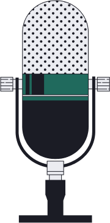

vocalists.ir
سلام من هستیم😄
اولین پیج ایرانی کاور های وایرال
چنل یوتویوب 
چنل تلگرام
فرستادن ویدیو آواز یا نوازندگی
چرا ویدیو من پست نمیشه
بچه ها میخوام چندتا نکته درباره فرستادن ویدیو های خوندنتون بگم که به دردتون میخوره: اگه دیدید بعد از یکماه و … ویدیوتون رو نزاشتم نا امید نشید بازم ویدیو های جدید ضبط کنید و بیشتر تمرین کنید یا بفرستید، 😅 اینطوری خودتون هم پیشرفت میکنید 😄من هر جهار شنبه ۵ تا ویدیو روی توی ایرانی های خوش صدا پست میکنم برای همین پست کردنشون طول میکشه نیازی نیست حتما تصویر خودتون باشه ولی سعی کنید ویدیوتون از لحاظ تصویری هم خفن باشه جون جذبش بیشتره🥰 سعی کنید کیفیت صدا خوب باشه و مثلا صدای اهنگ طوری نباشه ک اصلا کسی نفهمه شما چی میخونید!🙂 اگه ایدیتون رو به همراه ویدیو نفرستید من ویدیوشما رو نمیزارم حالا اکه دوست ندارید اصلا ایدیتون رو بزارم بحثش جدا است و موقع فرستادن ویدیو این نکته رو هم بگید در کل اینکه فقط وقتی بفرستید که از انتقاد ها نمیترسید- جون بعضیا یا خیلی تند انتقاد میکنن توی کامنت هاو بلد نیستن انتقاد سازنده بکنن یا اینکه کلا مشکل دارن ک این از خودشونه😂
همکاری
created by
BeKhafan